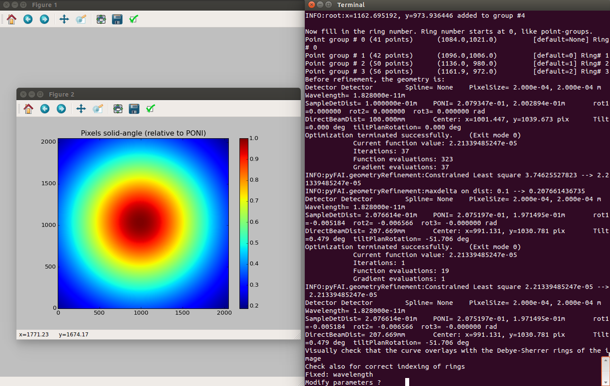
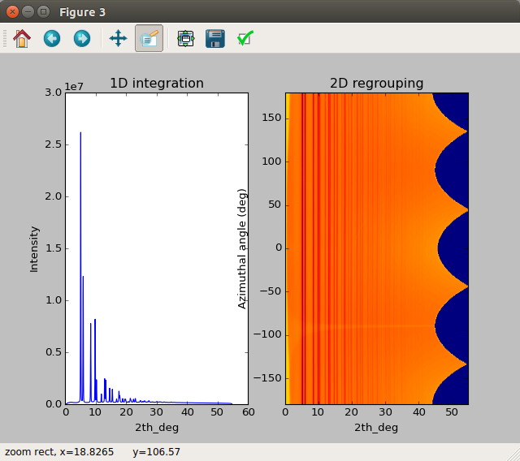

xpdAcq features¶
Automated dark collection¶
you might have found something weird when you running a xrun command:
I only requested one ``xrun`` but program runs two scans
So what happen?
That is actually a feature called auto-dark subtraction of xpdAcq.
When you are running your experiment, xpdAcq actually checks if you have
collected a fresh and appropriate dark frame every time it collects a scan.
The definition of fresh and appropriate is:
Nice and fresh¶
Given a certain period T (``dark window``), there exists a dark frame
with the same **total exposure time** and exactly the same **acquisition time**
as the light frame we are about collect.
Note
At XPD, area detector is running in continuous acquisition mode,
which means detector keeps reading but only saves image when xpdAcq
tells it to with desired exposure time. In short,
acquisition time defines how fast is detector reading time, ranged from 0.1s to 5s.
exposure time means total exposure time, which user defined.
Automated dark collection is enabled by default and it can be turned off by:
glbl.auto_dark = False
glbl.shutter_control = False
And period of dark window can be modified by:
glbl.dk_window = 200 # in minutes. default is 3000 minutes
Having auto_dark set to True is strongly recommended as this enables
xpdAcq to do automated dark frame subtraction when you pull out data from
centralized NSLS-II server.
Automated calibration capture¶
Often times, keeping track with which calibration file is associated with
certain scan is very tiring. xpdAcq makes this easier for you. Before every
scan is being collected, program goes to grab the most recent calibration
parameters in /home/xf28id1/xpdUser/config_base and load them as part of
metadata so that you can reference them whenever you want and make in-situ data
reduction possible!
Quick guide of calibration steps with pyFAI¶
First you will see an image window like this:
{kind=link}
{kind=link}
2. After selecting rings, click on the original terminal and hit <enter>.
Then you will be requested to supply indices of rings you just selected.
Remember index starts from 0 as we are using python.
After supplying all indices, you should have a window to show your calibration:
Program will ask you if you want to modify parameters, in most of case, you don’t have to. So just hit
<enter>in the terminal and integration will be done.
{kind=link}
Finally 1D integration and 2D regrouping results will pop out:
You can qualitatively interrogate your calibration by looking if lines in 2D regrouping are straight or not.
After this step, a calibration file with name
pyFAI_calib.ymlwill be saved under/home/xf28id1/xpdUser/config_base
{kind=link}
Alright, you are done then! With `automated calibration capture feature, xpdAcq
will load calibration parameters from the most recent config file.
metadata imported from spreadsheet¶
In order to facilitate , we suggest you to enter
as much information as you can and that is the main philosophy behind xpdAcq.
Typing in sample metadata during beamtime is always less efficient and it wastes your time so a pre-populated excel sheet with all metadata entered beforehand turns out to be the solution.
parsing rules¶
comma separated fields: information entities are separated by a comma.
cif name: pointer of potential structures for your sample, if any.Tags: any comment you want to put on for this measurement.
name fields:
phase string:
Auto-masking¶
auto-masking with user defined beamstop mask